Matthew A. Davis, MBA
Operations & Corporate Development · Systems Design · Strategic Communications · Independent R&D

Explore. Learn. Build.
Site Map
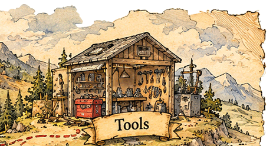
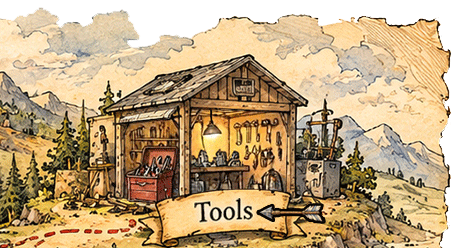
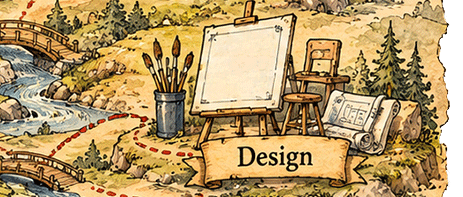
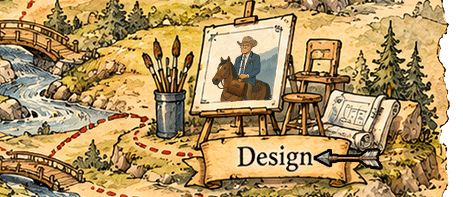
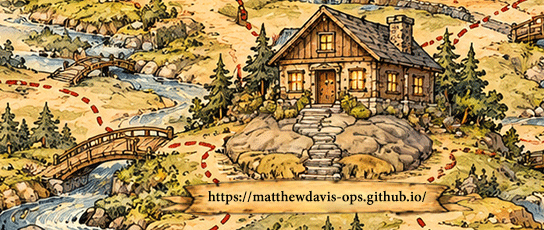
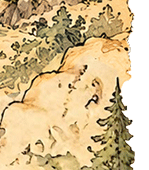
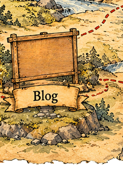
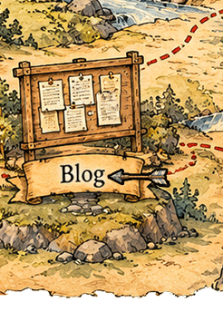
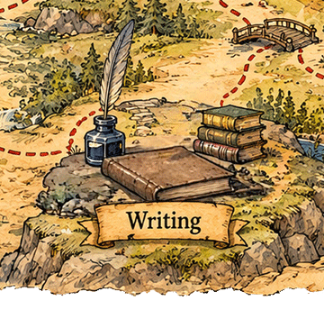
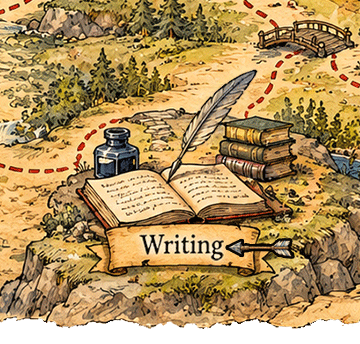
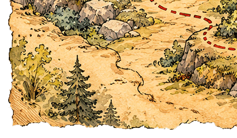
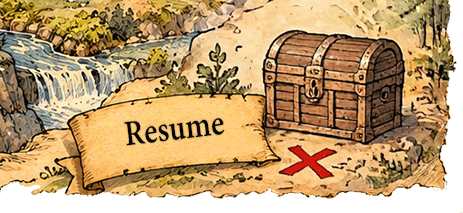
Key
- ProfileWho I am, what I do, and how I work.
- CareerMy professional experience, responsibilities, and accomplishments.
- ToolsPractical resources built for healthcare operations and clinical programs.
- DesignVisual communication, clinical materials, and interactive training projects.
- Web DesignWebsites and digital experiences I’ve designed and built.
- WritingPublished articles, industry contributions, and professional writing.
- BlogThoughts on communication, problem-solving, technology, and the work behind it.
- ResearchIndependent studies, technical specifications, and published research.
- Academic RecordCoursework, credentials, and academic achievements.
- Resume (PDF)A concise overview of my qualifications and experience.